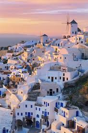

Roma, Italia
La belleza de Roma reside en la forma en que el pasado convive con el presente. Pasea por el **Coliseo** y el **Foro Romano** sintiendo el peso de la historia. La luz dorada del atardecer sobre las ruinas y la majestuosidad de la **Ciudad del Vaticano** crean una atmósfera inigualable de arte y espiritualidad.
Santorini, Grecia
Santorini es la definición de la belleza paisajística. Sus icónicas casas blancas y cúpulas azules que se aferran a los acantilados volcánicos ofrecen las vistas más espectaculares del **Mar Egeo**. La puesta de sol en **Oia** es un espectáculo de colores cálidos que hipnotiza al mundo, un lugar de calma y romance.

París, Francia
París es la capital mundial de la elegancia y la cultura. Su encanto reside en sus amplios bulevares, la imponente **Torre Eiffel** y la riqueza artística del **Museo del Louvre**. La belleza se encuentra en un simple paseo por el **Sena** o disfrutando de un café en un bistró, sintiendo el *joie de vivre* (alegría de vivir).